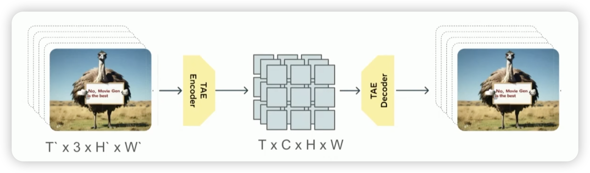
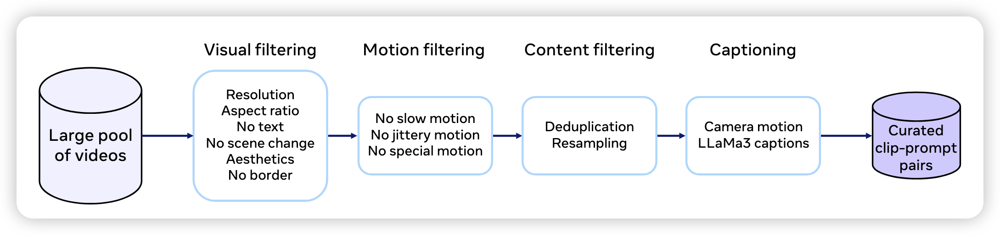

Stanford CS25: Transformers United
斯坦福大学的 CS25 是一门极受欢迎的研讨型课程，聚焦于 Transformer 架构及其在各个领域的前沿应用。该课程没有Assignments，主要通过阅读论文和课堂讨论来深入理解 Transformer 的原理和应用。每节课都可以独立的观看，该课程已经从 V1(2023) 更新到了 V5(2025)。 有兴趣的同学可以挑自己感兴趣的部分来学习。
课程资源:
V5
Transformers for Video Generation
这节Lecture 主要介绍了MovieGen(Polyak et al. 2025)，以及它的一个重要的发现：
Scaling simple transformer architectures (data, compute, parameters) works just as well for video as it does for text.
首先，第一件事就是如何学习视频的表示，在这里，他们是 Temporal Autoencoder,

[!info]
Spatio-Temporal Dimension is the common discription in the video. The spation mean the height and width of the Image (\(H \times W\)). And the Temporal is the time \(T\). Morden video model, such as Video GPT, TimeSformer, are all use patio-temporal tokens.
Upon use the Temporal Autoencoder, there are 8* compression across each spation-temporal dimension. For the 768px 16s 16fps video, if we model the pixel directly, it will get: more than 450M tokens, but if we use the Temporal Autoencoder, we will just get the 2M tokens, which is computationaly feasible.
Pre-Training Data Gather

- Visual Filtering:
- Resolution: minimum width or height of 720 px.
- Aspect Ratio:
- A mix of 60% landscape and 40% portrait videos.
- No Text: Use Video OCR model to remove the videos with text
Q1: Why not use specialized architectures like CNNs for video tasks (e.g., action diffusion in robotics)?
A: Specialized architectures like CNNs offer useful inductive biases for small-scale setups, but transformers scale better. At large scale, transformers can learn these biases themselves and benefit from established infrastructure. Meta found scaling transformers outperformed scaling CNNs for high-quality video generation.
Q2: Can this model architecture be used for 3D generation or video game content?
A: Yes. Once the data (e.g., 3D scenes, game environments) is tokenized into sequences, the transformer architecture becomes modality-agnostic. The key is to find a good encoding method to convert the data into discrete tokens.
Q3: Why are generated videos limited to 16 seconds? What’s the challenge with longer durations?
A: The main constraint is sequence length and computational cost. A 16-second video already produces ~73K tokens with compression. Doubling the duration doubles the token count. Potential solutions include better compression, hierarchical generation, or chunked temporal generation.
Q4: What happens if we run out of clean training video data?
A: Two strategies:
1. Improve filtering and concept balancing pipelines, possibly with LLMs.
2. Use generated data in post-training phases, which is already common in language modeling (e.g., RLHF).
Q5: How can academic researchers contribute without access to large-scale compute for pretraining?
A: Academia plays a vital role in proposing new training objectives, architectures, and post-training methods. For example, flow matching originated in academic work. Innovations at small scale can influence large-scale industrial projects.
Q6: How do you ensure that the auto-generated captions (via LLaMA-3) are high quality?
A: Meta trained a dedicated LLaMA-3-based video captioner. Limitations include frame subsampling (not all frames seen) and imperfect descriptions. Improving caption quality can directly enhance generation performance.
Q7: What text encoders are used, and how important is the choice?
A: MovieGen uses three frozen encoders: UL2, MetaCLIP, and T5. Surprisingly, decoder-only models (like LLaMA or GPT) perform worse for this use case. Models aligned with vision (like CLIP) work better for multimodal tasks.
Q8: Can the model handle long, detailed prompts describing multi-step actions?
A: It can handle basic sequences, but struggles with detailed, multi-event scripts. This may stem from the limited detail and sequencing in pretraining captions.
Q9: Can physics priors be hardcoded to improve realism (e.g., car collisions)?
A: The project intentionally avoids inductive biases, but injecting physics knowledge (e.g., from game engine data) could help. It’s a promising direction for future research.
Q10: Is there any work on watermarking to prevent misuse like deepfakes?
A: Yes. Meta and other groups like DeepMind are actively working on video watermarking techniques for authenticity and safety.
Q11: Why include GAN discriminators in the VAE decoder?
A: GAN losses encourage perceptual realism and allow more aggressive compression. This technique, inspired by VQGAN, helps produce sharper and more varied reconstructions than simple L1 pixel-level losses.
Q12: How do you prevent fake/generated content from polluting the training data?
A: Meta applies strict filtering to ensure high-quality real content. That said, generated data isn’t always harmful—many post-training techniques (e.g., SFT, RLHF) rely on synthetic outputs. The key is quality control.